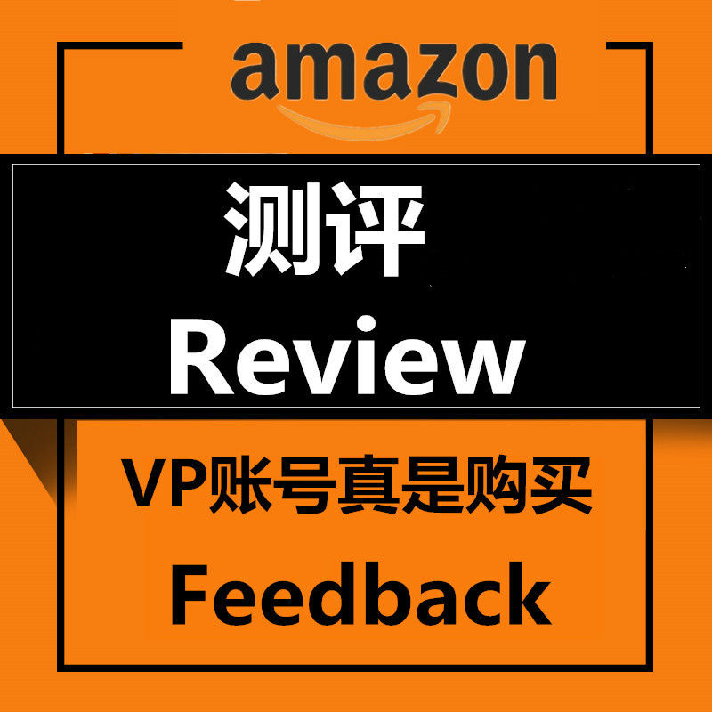

2018-08-31 14:58:31
做亚马逊的小伙伴们都非常清楚，一个新建的listing没有review肯定是不行的，前期本身没流量没转化率，所以我们要去做亚马逊review，测评有很多好处，前期能快速堆积一批review。通过做亚马逊review，能增加你的产品的信誉，让顾客更加相信你的产品从而购买，增加产品的转化率.
下面我一一来解说亚马逊review。在2017年上半年，亚马逊平台的小伙伴都知道，亚马逊平台允许通过产品免费来换取产品review，这就是最初的亚马逊测评的做法。所以当时很多小伙伴们都选择通过邮件的联系亚马逊官方的测评人，给他们发送邮件，邮件内容包括的产品信息，询问亚马逊职业测评人意愿，如果测评人愿意， 那么卖家们就会发送一个百分之九十九的折扣码给测评人，测评人收到货以后，就会审查你的产品，然后就写下他们的产品体验，有上视频的也有图片评价的。一度让很多卖家瞬间上了批量VP评价.
进入2017年下半年，亚马逊明令禁止了卖家通过免费提供产品给测评人换取评价的方式~那么后测评时代小伙伴们是怎么来做测评的呢？
许多小伙伴就在社交媒体上寻找美国人帮助完成产品，在facebook上面加入许许多多的review小组，每个小组里边多则上万人，少则上千人，那这个时候许许多多卖家每年会在群组里面发帖，帖子里发布自己产品的信息和图片，有兴趣的买家就会私信卖家，然后通过第三方付款给买家，完成订单后，再进行评价。这个方式起码火了将近一年，如今群内消息也冷冰冰，不管你发布什么产品也无人问津。
亚马逊review是怎么做的，其实还有一种方式，在facebook刷评论的同时，微信群里面也是一片火热，在微信群里面也是差不多的方式，卖家们在群里发很多产品图片，有兴趣的买家就会私信卖家，通过微信或者PAYPAL返款，然后完成订单，最后完成评论。经过一段时间由于买家买的东西过多，留评过多最终账号被封。
那如今怎么进行亚马逊测评呢？亚马逊后台有个早期评论者计划，可以参加活动获取五个评价。
要是还不能满足怎么办，现在还是有一些刷单机构帮助你来测评的。现在刷单机构也分两种，一种是VPS虚拟IP购买。第二种是刷单机构帮你找真实的国外买手，通过搜索关键词，慢慢浏览产品也，添加到购物车一段时间后再进行付款购买，产品收到后体验一两天然后再帮你上评，这也是目前最安全的一种方式了。你要是找不到的话，你可以联系他，卫星号：Oscar_IUM 他有丰富的亚马逊经验，可以配合你打造listing，帮你安全测评安全刷销量。
